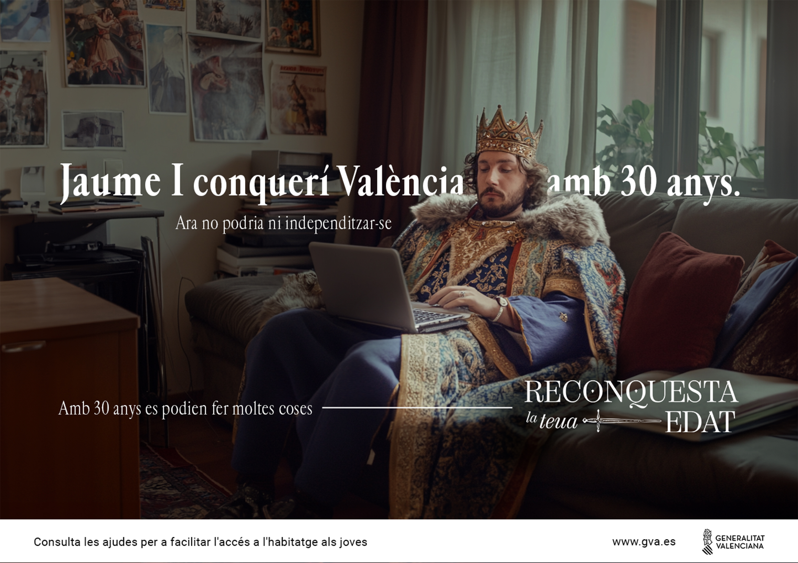

RETO: Crear un concepto creativo para dar a conocer el plan de ayudas de la Generalitat Valenciana a los jóvenes valencianos.
INSIGHT: Antes con 30 años se podían hacer muchas más cosas que ahora, y el mayor representante de la Comunitat, Jaume I, conquistó Valencia cuando tenía 30 años.



COPY: Lucas Travaglio
ARTE: Espe Moragues